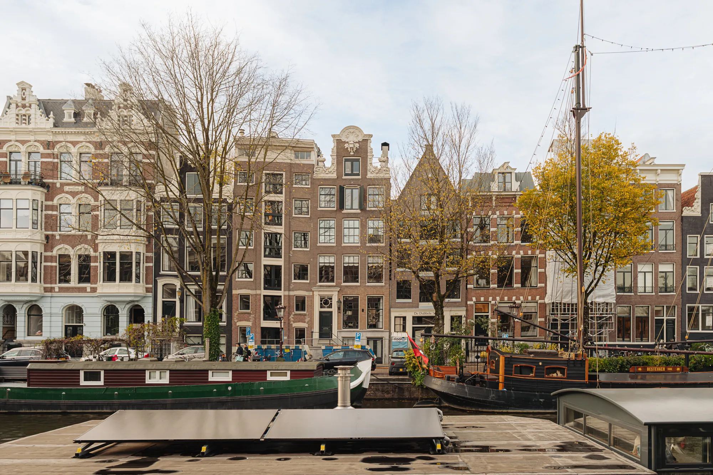

Blog · Keuken
Keuken renovatie 2026: trends, kosten en de valkuilen om te vermijden

De keuken is in tien jaar tijd veranderd van werkruimte naar middelpunt van het huis. Hier wordt gewerkt, gegeten, huiswerk gemaakt en vrienden ontvangen. Het maakt de keukenrenovatie tegelijk de meest gewilde én de meest onderschatte verbouwing.
In dit artikel zetten we de trends van 2026 op een rij, geven we realistische prijsindicaties en delen we de vijf valkuilen die we keer op keer terugzien, niet bij de keukenboeren, maar bij de uitvoering daarna.
Vijf keukentrends die we in 2026 het meest plaatsen
De Italiaanse en Scandinavische invloed van de afgelopen jaren maakt langzaam plaats voor een warmere, materialere keuken. Hieronder de ontwerpkeuzes waar onze klanten in 2026 voor kiezen.
- Warme natuurmaterialen: eikenfineer, walnoot en travertijn vervangen het hoogglanswit dat tien jaar lang dominant was.
- Verborgen apparatuur: vaatwassers en koelkasten achter fronten, magnetrons in een hoge kast in plaats van zichtbaar boven het werkblad.
- Het ruime kookeiland: minimaal 2,4 meter lang, vaak met een tweede waterpunt en een geïntegreerde inductiekookplaat met afzuiging.
- Gemixte materialen: een eiland in marmer of Dekton naast keukenkasten in matgelakte fronten of natuurfineer.
- Sfeerverlichting in lagen: niet alleen werklicht, maar ook spotjes onder de bovenkasten, ledstrips in plinten en een dimbare hanglamp boven het eiland.
Wat kost een nieuwe keuken in 2026?
Een keuken bestaat uit drie kostenposten: de keuken zelf (kasten, fronten, werkblad), de apparatuur, en het bouwkundige werk eromheen (sloop, leidingen, tegelwerk, plaatsing). Elk van deze posten kan de andere overschrijden.
Indicatieve prijzen voor 2026, exclusief BTW: een budgetkeuken met standaardapparatuur €5.000 tot €10.000. Een middensegmentkeuken met merkapparatuur (Bosch, Siemens, AEG) €12.000 tot €25.000. Een hoogwaardige designkeuken met Miele- of Gaggenau-apparatuur en een natuurstenen werkblad €30.000 tot €60.000 en meer.
Het bouwkundige werk komt daar bovenop: sloop oude keuken (€500 tot €1.500), nieuwe leidingen voor water, afvoer en elektra (€1.500 tot €4.000), tegelwerk wand en vloer (€60 tot €120 per m²) en plaatsing van de keuken zelf (€800 tot €2.500). Voor een complete keukenrenovatie inclusief alles reken je realistisch met €15.000 tot €45.000.
Wil je je eigen plan doorrekenen? De calculator op onze prijspagina geeft je een directe bandbreedte op basis van type werk, oppervlakte en afwerkingsniveau.
De planning: drie weken voor sloop en plaatsing, of toch niet?
Keukenboeren noemen graag een doorlooptijd van twee tot drie weken voor sloop, leidingwerk, tegelwerk en plaatsing. Dat klopt, als alle materialen op tijd zijn en er geen verrassingen achter de muren zitten.
In de praktijk komen er bijna altijd twee dagen extra bij voor onverwachte zaken: een zachte chape die opnieuw moet worden gestort, een afvoerpunt dat verlegd moet worden, een betonnen muur die niet doorboord kan worden zonder constructeur. Reken realistisch met drie tot vijf weken vanaf sloop tot ingebruikname, plus de levertijd van de keuken zelf, tegenwoordig acht tot zestien weken.
Reken vooruit
Wil je in december weer in je nieuwe keuken koken? Bestel uiterlijk in augustus. Wil je de keuken voor de zomervakantie? Bestel in maart of april.
De vijf valkuilen die we het vaakst zien
Onderstaande problemen ontstaan zelden door de keukenboer of de plaatser zelf. Ze ontstaan door slechte coördinatie tussen het verkoopproces en het bouwkundige traject.
- De keuken is besteld voordat de bouwkundige situatie is opgenomen: afvoer, gas, elektra en water blijken niet overeen te komen met het ontwerp.
- De installateur en de keukenplaatser werken voor verschillende partijen: niemand voelt zich verantwoordelijk voor de aansluitpunten.
- Het tegelwerk is gepland tussen sloop en plaatsing, maar de tegels zijn pas op de dag van plaatsing geleverd.
- De inductiekookplaat met afzuiging vereist een speciale aansluiting (vaak een aparte groep) die niet vooraf is voorzien.
- De vaatwasser blijkt niet onder het werkblad te passen omdat de chape 2 cm hoger ligt dan op de bouwtekening, een probleem dat een coördinator vooraf zou hebben gezien.
Waarom één aannemer voor het hele traject sneller én goedkoper is
De gangbare aanpak, een keuken bij een keukenzaak kopen en zelf een loodgieter en tegelzetter regelen, voelt goedkoper, maar leidt vrijwel altijd tot wachturen en herwerk. De optelsom van die kleine inefficiënties bedraagt 10 tot 25% van de aanneemsom.
Wij coördineren keukenrenovaties als één project: één planning, één aanspreekpunt, één garantietermijn. Dat betekent dat de loodgieter precies weet wanneer de tegelzetter klaar is, dat de elektricien de juiste groep heeft voorbereid en dat de keukenplaatser geen lege ruimte aantreft.
Voor klanten in Amsterdam, Utrecht, Haarlem en de rest van de Randstad voeren we keukenprojecten doorgaans binnen vier weken uit, mits de keuken op tijd geleverd is.
Vier vragen die je je keukenleverancier moet stellen
Voordat je een handtekening zet onder de keukenofferte, stel onderstaande vier vragen. De antwoorden voorkomen bijna alle bovengenoemde valkuilen.
- Wie verzorgt de bouwkundige opname vóór de keuken besteld wordt, de keukenleverancier zelf of een externe partij?
- Welke onderdelen zitten er wél en niet in de prijs (sloop, leidingen, tegelwerk, plaatsing, aansluiting apparatuur)?
- Wat is de exacte levertijd en wat gebeurt er bij vertraging, is er een vergoeding bij overschrijding?
- Welke garantie zit op het werk en op de apparatuur, en bij wie kan ik terecht als er na een jaar iets mis is?
Conclusie
Een keukenrenovatie is een investering in de plek waar je dagelijks vele uren doorbrengt. Door vooraf het ontwerp én het bouwkundige traject te coördineren, en niet pas tijdens de uitvoering, bespaar je tijd, geld en een hoop ergernis.
Wij helpen je graag van eerste schets tot en met oplevering. Bekijk onze prijspagina voor de actuele bandbreedtes of vraag een gratis opname aan, wij komen langs en denken mee over je concept.
Vraag een gratis opname aan